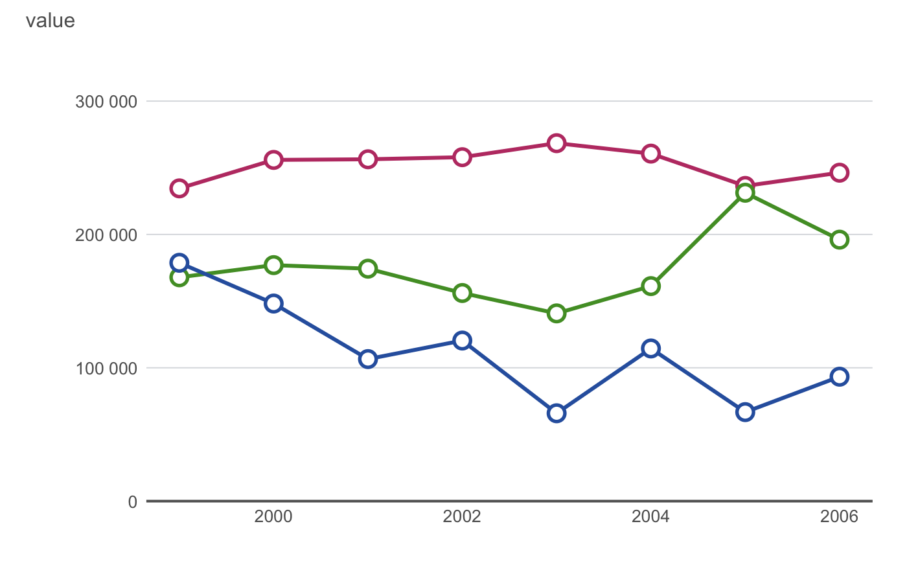
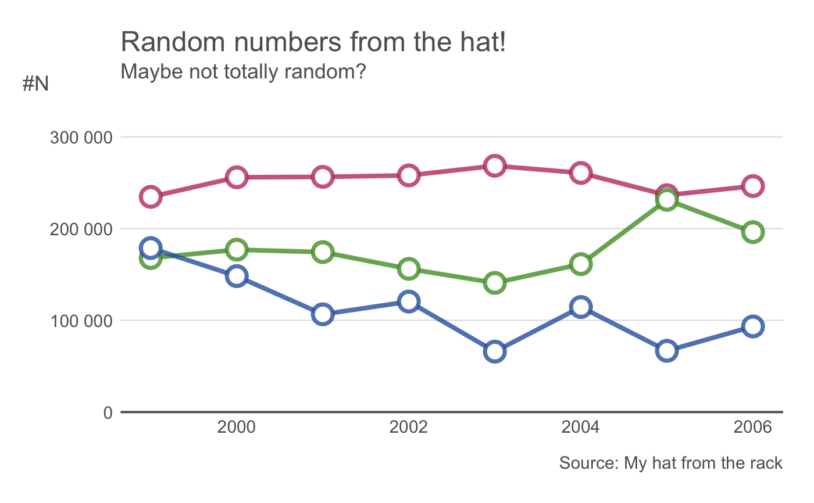
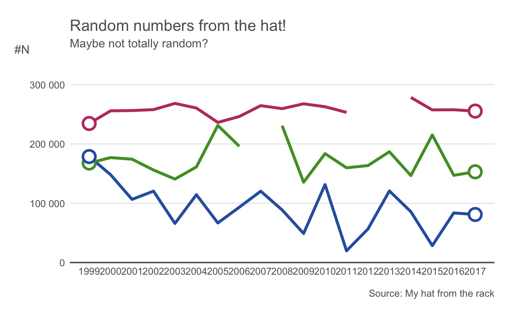
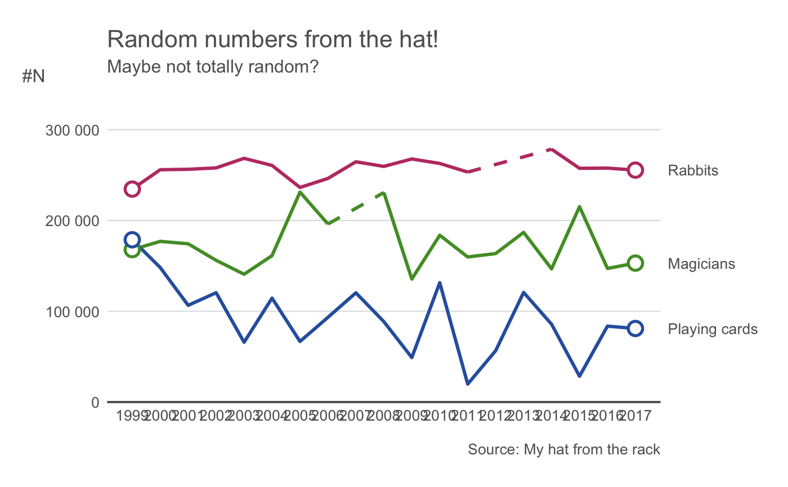
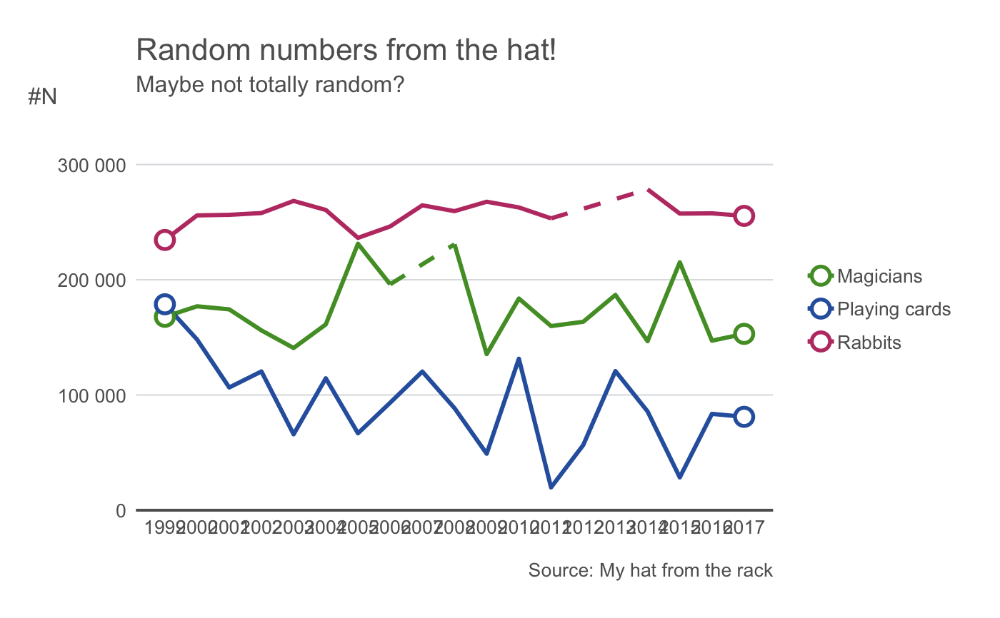
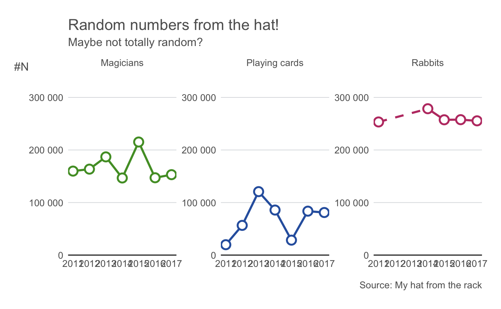
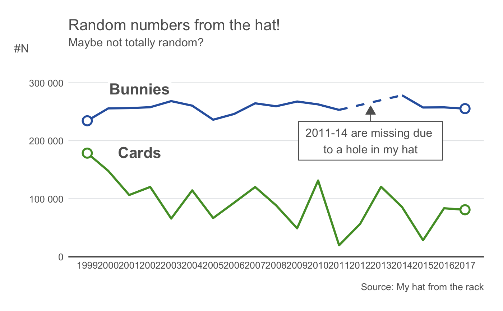
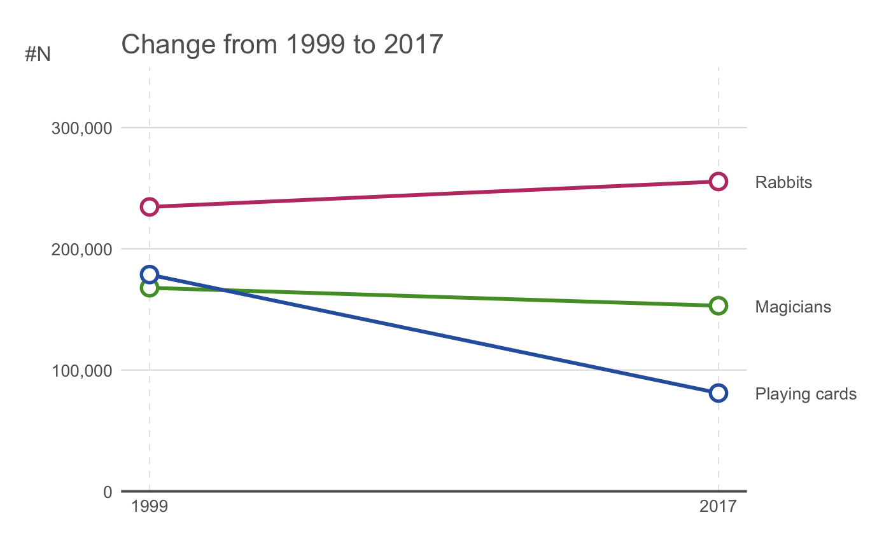
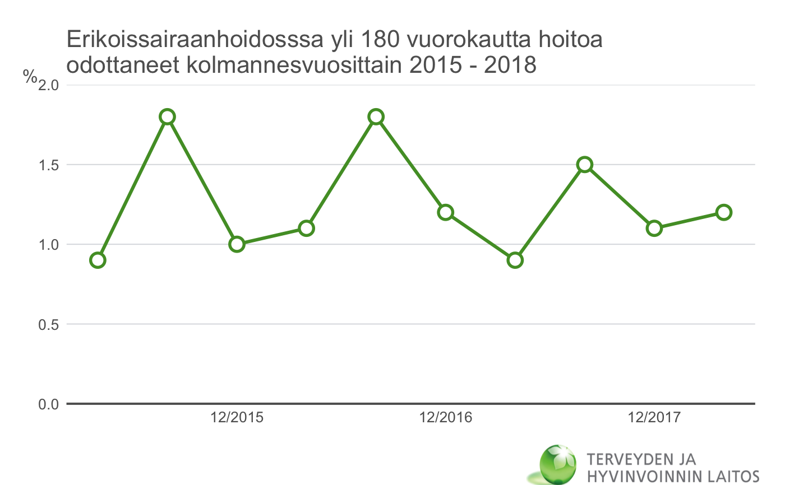

thlLinePlot.RdMake thlLinePlot
thlLinePlot(data, xvar, yvar, groupvar = NULL, ylabel = yvar, xlabel = NULL, colors = thlColors(n = 12, type = "quali", name = "line"), title = NULL, subtitle = NULL, caption = NULL, legend.position = "none", base.size = 16, linewidth = 3, show.grid.x = FALSE, show.grid.y = TRUE, lang = "fi", ylimits = NULL, marked.treshold = 10, plot.missing = FALSE, xaxis.breaks = waiver(), yaxis.breaks = waiver(), panels = FALSE, nrow.panels = 1, labels.end = FALSE, circle = TRUE)
| data | a data frame |
|---|---|
| xvar | variable to be plotted on the x-axis. |
| yvar | variable to be plotted on the y-axis. |
| groupvar | grouping variable. Defaults to NULL (no grouping). |
| ylabel | y-axis label. Defaults to yvar. |
| xlabel | x-axis label. Defaults to NULL (omitted). |
| colors | colors to be used. Defaults to THL qualitative color palette for line plots (see |
| title | a character string specifying the title of the plot. |
| subtitle | a charater string specifing the subtitle of the plot. |
| caption | a character string specifying the caption of the plot . |
| legend.position | e.g. "topright", (see |
| base.size | the size of basic text in the plot title, axis labels in PostScript points, defaults to 16. |
| linewidth | width of the line in PostScript points, defaults to 3. |
| show.grid.x | TRUE/FALSE, defaults to FALSE. |
| show.grid.y | TRUE/FALSE, defaults to TRUE. Set the grid sequence with parameter yaxis.breaks |
| lang | language options for the y-axis labels. Defines the style of big marks and decimal marks (see |
| ylimits | limits for the y-axis |
| marked.treshold | the maximum amount of data points plotted with both line and a dot (default 10). If the number of data points is greater than this treshold, dots are plotted only at the beginning and the end of the line. setting this to NULL will omit all dots. |
| plot.missing | TRUE/FALSE, should the missing values be linearly interpolated and plotted with dotted line (see |
| xaxis.breaks | a character vector defining the x-axis breaks and tickmarks. Also affects the x-axis grid when it is set to TRUE. To allow automatic calculation, use waiver() |
| yaxis.breaks | a character vector defining the y-axis breaks and tickmarks. Also affects the y-axis grid when it is set to TRUE. To allow automatic calculation, use waiver() |
| panels | TRUE/FALSE, should multiple graphs be plotted in separate panels? If TRUE, the panels are based on the grouping variable defined by the groupvar -argument. |
| nrow.panels | In how many rows should the panels be plotted? |
| labels.end | TRUE/FALSE. Whether the line labels should be displayed at the right end of each line |
| circle | TRUE/FALSE. Whether the shape is always circle or is allowed to vary across groupvar (hollow shapes 21:25 assumed). |
a ggplot -object
## Generate data for demonstration year <- 1999:2017 set.seed(1234) value1 <- jitter(c(250:(250+length(year)-1)), factor = 100)*1000 value2 <- jitter(c(200:(200-length(year)+1)), factor = 300)*1000 value3 <- jitter(c(100:(100-length(year)+1)), factor = 400)*1000 dat <- data.frame(year = rep(year,3), value = c(value1, value2, value3), group = factor(rep(c("Rabbits", "Magicians", "Playing cards"), each = length(year)))) dat$value <- with(dat, ifelse(year %in% c(2012,2013) & group == "Rabbits", NA, value)) dat$value <- with(dat, ifelse(year == 2007 & group == "Magicians", NA, value)) ## Default line plot: thlLinePlot(data = subset(dat, year<2007), xvar = year, yvar = value, groupvar = group, ylimits = c(0,350000))## Add some decoration and transparency to the colors mycaption <- c(expression(paste(bold("Source:"), " My hat from the rack"))) ## A caption which is partially in bold thlLinePlot(data = subset(dat, year<2007), xvar = year, yvar = value, groupvar = group, title = "Random numbers from the hat!", caption = mycaption, subtitle = "Maybe not totally random?", ylab = "#N", base.size = 18, linewidth = 4, colors = thlColors(n = 3, type ="quali", name = "line", alpha = 0.8), ylimits = c(0,350000))## By default the missing values are not plotted thlLinePlot(data = dat, xvar = year, yvar = value, groupvar = group, title = "Random numbers from the hat!", caption = mycaption, subtitle = "Maybe not totally random?", ylab = "#N", linewidth = 4, ylimits = c(0,350000), xaxis.breaks = 1999:2017)## Allow linear interpolation of missings and add labels at the end of the lines: thlLinePlot(data = dat, xvar = year, yvar = value, groupvar = group, title = "Random numbers from the hat!", caption = mycaption, subtitle = "Maybe not totally random?", ylab = "#N", ylimits = c(0,350000), xaxis.breaks = 1999:2017, plot.missing = TRUE, labels.end = TRUE)## Instead of labels at the line ends you can also use legend... thlLinePlot(data = dat, xvar = year, yvar = value, groupvar = group, title = "Random numbers from the hat!", caption = mycaption, ## Add the caption subtitle = "Maybe not totally random?", ylab = "#N", ylimits = c(0,350000), xaxis.breaks = 1999:2017, plot.missing = TRUE, legend.position = "right")## ... or plot all groups on different panels ... thlLinePlot(data = subset(dat, year>2010), xvar = year, yvar = value, groupvar = group, title = "Random numbers from the hat!", caption = mycaption, subtitle = "Maybe not totally random?", ylab = "#N", ylimits = c(0,350000), xaxis.breaks = 1999:2017, plot.missing = TRUE, panels = TRUE, nrow.panels = 1)#> Warning: Removed 2 rows containing missing values (geom_point).## ... or annotate the information manually with thlAnnotate(): res <- thlLinePlot(data = subset(dat, group %in% c("Rabbits", "Playing cards")), xvar = year, yvar = value, groupvar = group, title = "Random numbers from the hat!", caption = mycaption, subtitle = "Maybe not totally random?", ylab = "#N", ylimits = c(0,350000), xaxis.breaks = 1999:2017, plot.missing = TRUE) res + thlAnnotate(type = "label", x = 2001.5, y = 290000, label = "Bunnies", style = "white") + thlAnnotate(type = "label", x = 2001.5, y = 180000, label = "Cards", style = "white", fill = TRUE) + thlAnnotate(type = "box", x = 2012.5, y = 200000, yend = 260000, label = "2011-14 are missing due \nto a hole in my hat", style = "white", fill = TRUE, text.size = 12)## Make a slope graph thlLinePlot(data = subset(dat, year %in% c(1999,2017)), xvar = year, yvar = value, groupvar = group, title = "Change from 1999 to 2017", ylab = "#N", ylimits = c(0,350000), xaxis.breaks=c(1999,2017), labels.end = TRUE, show.grid.x = TRUE, lang ="ENG")data("yli180") yli180$kk2<-factor(yli180$kk, levels = yli180$kk) thlLinePlot(data = yli180, xvar = kk2, yvar = pros, ylimits = c(0,2), ylab = "%", title = "Erikoissairaanhoidosssa yli 180 vuorokautta hoitoa \nodottaneet kolmannesvuosittain 2015 - 2018", caption="", xaxis.breaks = c("12/2015","12/2016","12/2017", "12/2018"))